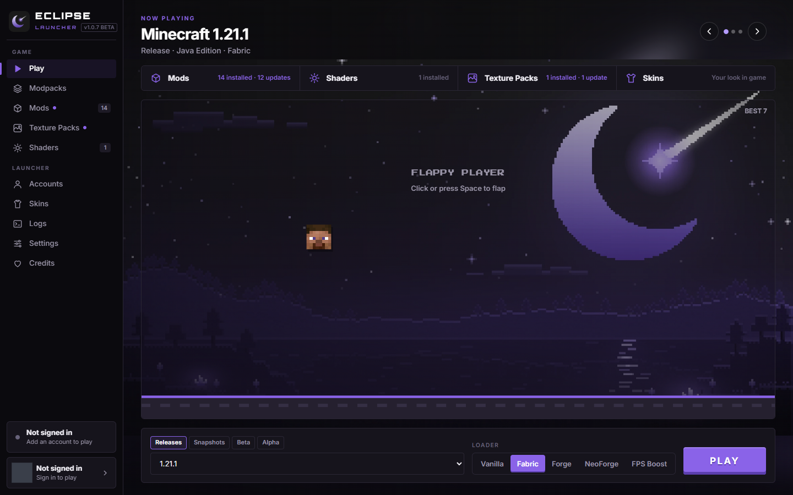
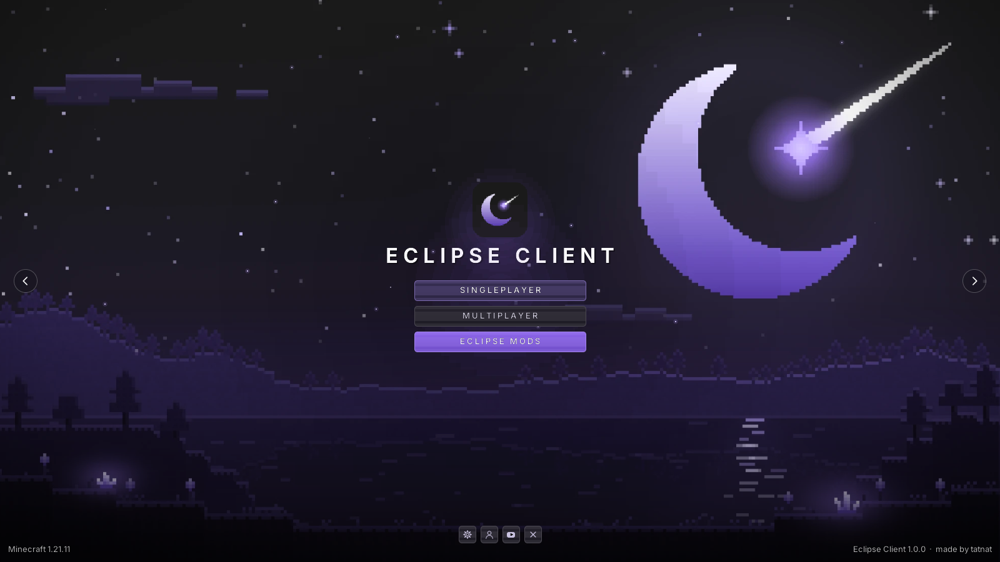
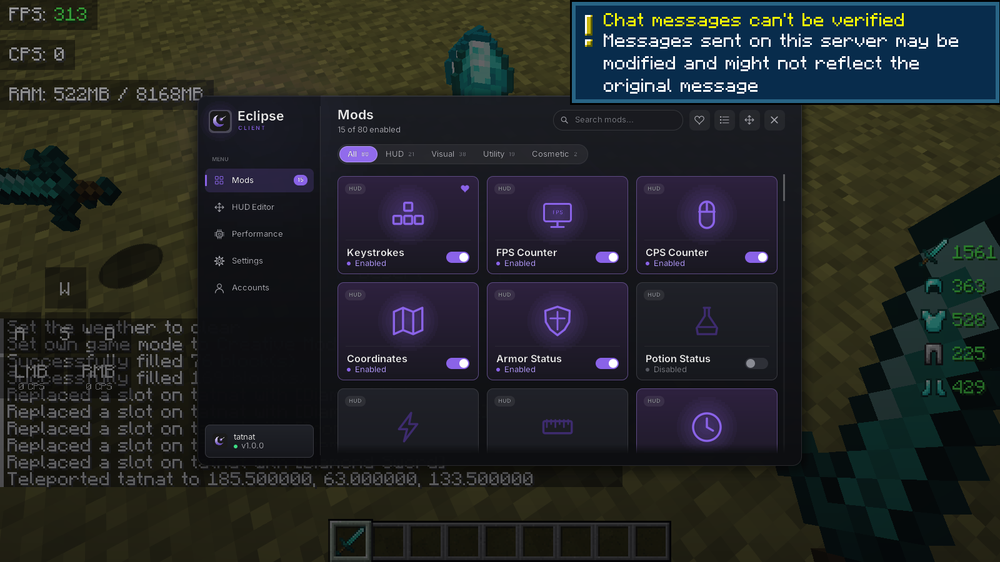
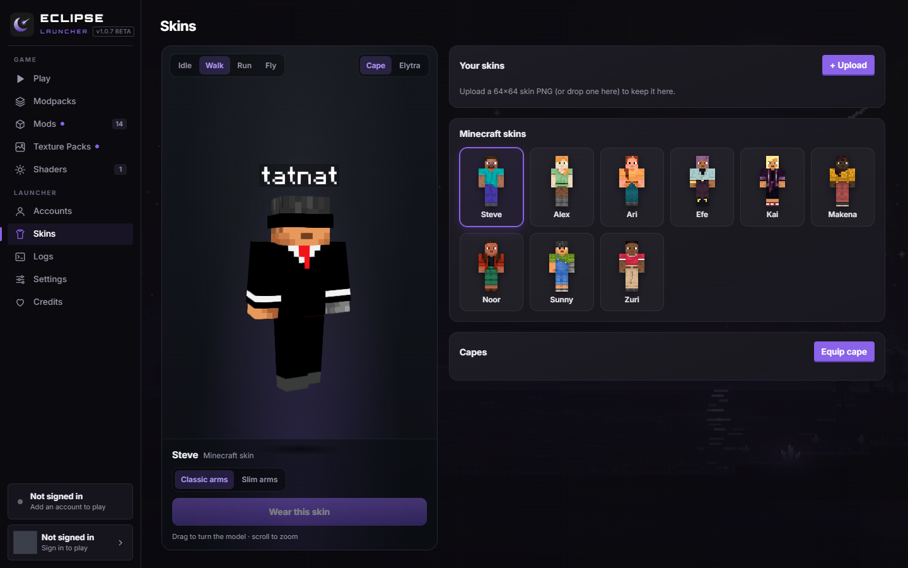
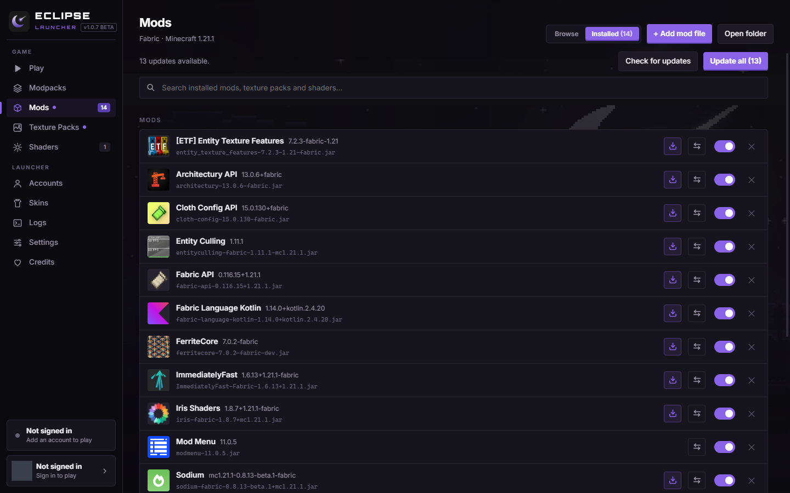

FPS BOOST
274FPS
Built-in culling, up to 3× faster
Mobs, chests and signs hidden behind walls simply aren't drawn. Add FPS Boost for Sodium, Lithium and friends in one click.
Latest version is out
The free Minecraft client for every version, from 1.8.9 to 26.3.
80 mods, a big FPS boost and a launcher that does everything for you.
// FEATURES
Sign in once, pick a version and play. Eclipse sets up the loader, the mods and the settings for you.
Mobs, chests and signs hidden behind walls simply aren't drawn. Add FPS Boost for Sodium, Lithium and friends in one click.
Keystrokes, CPS, zoom, freecam, Tier Tagger, totem counters and 70+ more. Right Shift opens it, or pick your own key.
Vanilla, Fabric, Forge and NeoForge. Releases, snapshots and old betas.
Live 3D preview with your real name tag. Upload skins and switch capes.
See when updates are out, update with one click or switch to any version. Imports Modrinth and CurseForge modpacks too.
Microsoft and offline accounts. Switch between them in game, no restart needed.
// PERFORMANCE
300 mobs and 40 chests behind a wall, Minecraft 1.21.11. Same PC, same view, Eclipse's culling switched on and off.
Works next to Sodium, Iris, Lithium, ImmediatelyFast and FerriteCore, and steps aside automatically if you use the EntityCulling mod.
// EVERY VERSION
Still the home of competitive PvP. Keystrokes, CPS and Toggle Sprint feel right at home.
The version with more mods than any other, now with Eclipse on top.
Netherite, bastions and the servers that never left.
Taller worlds and deeper caves, with culling to keep them smooth.
The big modpack version. Import a pack and press Play.
Spears, mounts and every modern Fabric and NeoForge mod.
Year-numbered versions, supported on day one.
Every release, snapshot, beta and alpha runs in the launcher, with or without a loader.
// SHOWCASE
Your background, every version and loader, and Flappy Bird with your own head while the game loads.
Minecraft's title screen, replaced by the same night skies with your own buttons.
Right Shift opens 80 mods to switch on, set up and drag around with the HUD editor.
A live 3D preview with the real Minecraft name tag before you put a skin on.
Mods, texture packs and shaders in one list, each with an update arrow and a version switcher.





// INSTALL
Get Eclipse-Launcher-Setup.exe with the button. A portable version that needs no install is on GitHub too.
Open the launcher and sign in with the Microsoft account that owns Minecraft: Java Edition.
Pick a version and a loader and press Play. Eclipse Client is added for you; Right Shift opens the mod menu.
Windows may warn about an unknown app the first time (the installer isn't code-signed yet): click More info → Run anyway.
// FAQ
Yes. The launcher and the client are completely free, and the source is on GitHub.
The launcher runs every Minecraft version. Eclipse Client (the in-game mods) works on Fabric 1.8.9–1.12.2 and 1.14.4–26.3, Forge 1.8.9–1.12.2 and 1.18.2–1.20.1, and NeoForge 1.20.2–26.3.
Yes. Drop in your own jars, install from Modrinth, or import a Modrinth (.mrpack) or CurseForge modpack. Eclipse Client works next to Sodium, Iris, Lithium and other popular mods.
Eclipse Client only changes what you see and your HUD; it adds no cheats. Still, every server has its own rules, so check them if you're unsure.
The launcher updates itself from GitHub and brings the newest Eclipse Client with it. There's nothing to download again.
Free, every version, and set up in a minute.
Download Eclipse